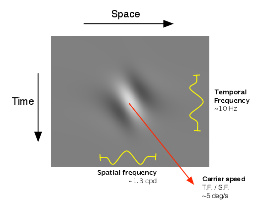
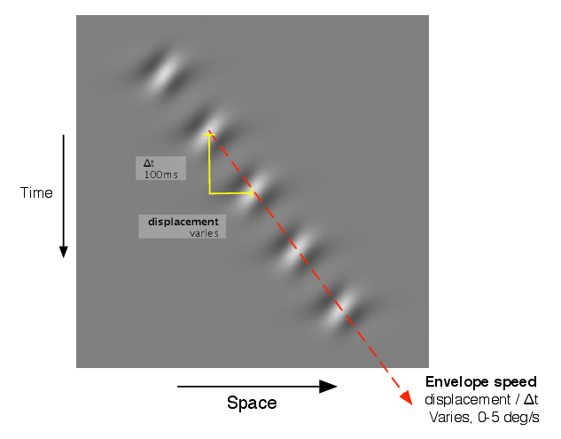
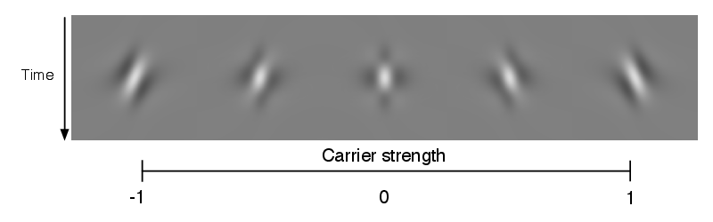
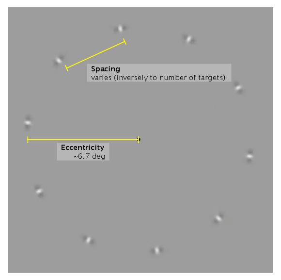
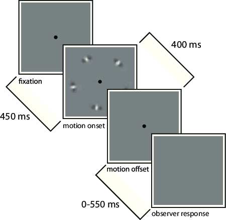

Observers were the author (PBM) and 10 naïve observers (3 male, 7 female.) All had normal or corrected-to-normal vision. All observers provided informed written consent, and all procedures involved were approved by the Institutional Review Board at the University of Washington.
Stimuli were presented on a flat CRT video monitor (ViewSonic PF790). Its resolution was set to 800 × 600 pixels with a display area of 35.5 × 25.8cm, spanning 33.0 × 24.3° of visual angle. The monitor used a refresh rate of 120Hz. Experiments were programmed in MATLAB using the Psychtoolbox (Brainard, 1997) and Eyelink toolbox extensions (Cornelissen et al., 2002), along with custom OpenGL code. All guns were fixed at the same voltage to show grayscale stimuli. The monitor was calibrated using a Tektronix J17 photometer. A gray background of 30.2cd∕m2 was used; the black point and white point of the display measured against that background were 0.13cd∕m2 and 60.97cd∕m2. A hardware lookup table with 10-bit resolution was used to linearize the display response.
Observers sat behind a blackout curtain so that ambient illumination was mostly due to the monitor and viewed the screen binocularly using a chin and forehead rest with the eyes 60cm from the screen, aligned with the screen’s center axis. Eye position was monitored using a video-based eye tracker (EyeLink 1000; SR Research) using a sample rate of 1000Hz. Observers gave responses by turning a knob (PowerMate; Griffin Technologies) with their preferred hand in the direction of the perceived motion.
| A | B | ||
 |  | ||
| C | 
| ||
| A |  |
| B |  |
This construction of the stimuli is illustrated in Figure 3.1 and 3.2. The stimuli consisted of a number of identically moving elements arranged into a circle centered on the fixation point and moving circumferentially. Each element consisted of a series of 5 motion pulses separated by a regular spatial displacement Δx and temporal intervals Δt. Along the direction of motion, the luminance distribution of a pulse was given by a Cauchy filter function (Klein and Levi, 1985). At right angles to the direction of motion the pulses were windowed by a Gaussian envelope with standard deviation w∕2, while the temporal onset and offset of each pulse had a Gaussian profile with standard deviation d∕2. An equation describing the luminance profile of a single pulse, centered at (x,y,t) = (0, 0, 0) with carrier motion along x is:
Here ω controls the temporal frequency and f the spatial frequency of the carrier, d, the duration of the pulse, w the radial width of the envelope and n the circumferential width of the envelope (relative to the spatial frequency.) At the moment of maximum contrast the carrier was always in cosine phase.
To control the direction and amount of carrier motion I overlaid two pulses with opposite directions of carrier motion, with varying amounts of relative contrast. This is parameterized by the carrier strength C,
where CCW and CCCW are the contrasts of clockwise and counterclockwise components. Thus C has a range of [-1, 1] and a value of 0 indicates a counterphase flicker with equal parts clockwise and counterclockwise motion energy. The total luminance contrast is held at CCW + CCCW = 0.5 for the experiments reported here.
The examples in Section 2 have the following settings, the same as used in Experiment 1 and Experiment 2: 5 pulses at intervals of Δt = 100ms, carrier temporal frequency ω = 10Hz, and (with an eccentricity of e = 6.67∘,) w = 0.5∘ and f = 2 cpd.
The time course of a trial is illustrated in 3.2B. A fixation point was presented. The computer then waited for the observer to fixate. 450ms after detecting fixation, the motion stimulus was shown for 400 ms (the initial pulse, then 4 steps of envelope displacement occurring at 100ms intervals.) After the motion stimulus concluded, the observer indicated the direction of perceived motion by turning the knob within a response window from 400 to 950ms measured from stimulus onset. If the observer blinked or broke fixation before the offset of the motion stimulus, the trial was aborted and reshuffled into the stimulus set, to be repeated later in the session. If the response was outside the window, the observer received visual feedback that their response was either too fast or too slow, and the trial was also reshuffled into the stimulus set. An audio click was played each time observers gave a response; this seemed to help observers establish a consistent rhythm through the experiment. No feedback was given as to the correctness of an observer’s response, only whether they had responded within the time window. Observers were instructed to report the apparent direction of motion, and advised that there were no “correct” answers. In some conditions observers reported seeing conflicting or overlapping directions of motion. In those cases they were advised to choose whichever direction of motion appeared more salient.
Observers performed the task in sessions that lasted a maximum of 1 hour, divided into 4 to 6 blocks, and were prompted to take a break between blocks. They could also rest at any time by simply delaying fixation. At the beginning of each block, the eye tracking system was automatically recalibrated by asking the observer to make saccades to a sequence of targets at randomly chosen locations on the screen.
I used staircase procedures to collect data relating the proportion of clockwise responses as to the envelope displacement, Δx. For each psychometric function we used two staircases, one 2-up-1-down and the other 2-down-1-up, to bracket the particular displacement at which subjects were equivocal about perceived direction (the point of subjective equality or PSE.) In a typical session, 6-8 pairs of staircases, each with a different stimulus configuration, were run concurrently, with each staircase operating independently and trials from all staircases being randomly interleaved. Example data from this procedure is shown in Figure 5.1, with envelope displacement Δx plotted on the abscissa and the proportion of “clockwise” responses on the ordinate. In these graphs we scale the area of the data points to be proportionate to the number of trials collected at that displacement. Thus, the smaller a data point, the further it may acceptably lie from the model fit; some data drawn using the smallest dots may represent a single trial at a value of displacement that the staircase procedure did not revisit.
When staircase procedures were used, they employed randomized folding; a staircase configured to use a carrier strength C of 0.2 would actually pseudorandomly present either clockwise (0.2) or counterclockwise (-0.2) carrier on each trial, with the staircase-controlled envelope motion reversing direction accordingly.
I similarly presume that an observer’s responses to a stimulus and its mirror image are symmetric up to a constant bias. Therefore we will present and write about stimuli, without loss of generality, as though the carrier motion runs clockwise in all trials, even though the underlying data contains a balanced mixture of clockwise and counterclockwise trials. The mirror image of a trial reverses the sign of three properties: the carrier motion, the envelope motion, and the observer’s response. So, a trial with carrier strength C = -0.2 and envelope motion Δx = 0.1, where the observer responded “clockwise,” will be presented equivalently to a trial with carrier strength C = 0.2 and envelope motion Δx = -0.1, where the observer responded “counterclockwise.” I use the convention that carrier strength is always shown as positive. Note that the direction of envelope motion can differ from that of carrier strength, so that envelope motion will still take both positive and negative values when data is folded.
In some cases observers exhibit a bias toward clockwise or counterclockwise responses. I include a global bias term in our model to account for this - this is the only term in the model that is not symmetric. I fit the model using unfolded data. When drawing fitted curves to illustrate model predictions, I sum out the bias by averaging the model predictions for clockwise and counterclockwise conditions.
Data analysis was performed using the R language (R Core Team, 2013). Models in Experiment 1 were fit using the gnm package (Turner and Firth, 2012). Models in Experiment 2 were fit using the Stan modeling language (Stan Development Team, 2014). Graphics were prepared using the ggplot2 (Wickham, 2009) and rgl (Adler and Murdoch, 2013) packages. Original datasets and analysis scripts for this manuscript will be published online at https://github.com/crowding/thesis.